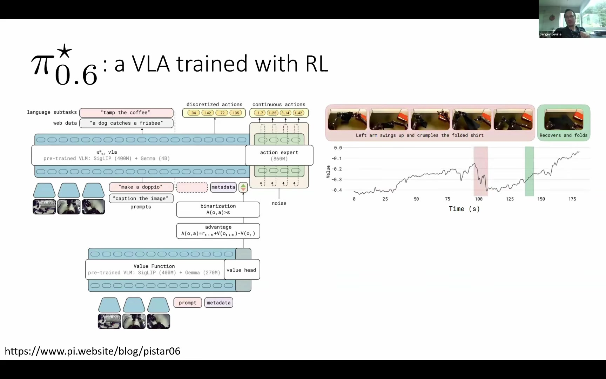

Executive summary
큰 모델의 지식과 작은 정책의 숙련을 한 고리로 묶는다
로봇 파운데이션 모델의 지도학습은 폭넓은 지식과 일반화를 제공하지만, 정밀한 실제 작업에서는 느리고 불완전하다. 강화학습은 이 결핍을 메울 수 있으나, 수십억 파라미터 모델을 희소한 실세계 데이터로 직접 업데이트하면서 새로운 전략까지 발견하는 것은 아직 매우 어렵다.
Levine의 대안은 문제를 분해하는 것이다. 작은 스페셜리스트 정책은 샘플 효율적인 실세계 RL로 병목 과제를 숙달한다. 제너럴리스트 VLA는 표현과 행동 사전확률을 제공해 그 탐색을 가속한다. 이후 스페셜리스트의 자율 롤아웃을 제너럴리스트에 증류해 일반화 가능한 능력으로 바꾼다.
엔드투엔드 RL이 어렵다면, 제너럴리스트와 스페셜리스트를 경쟁시키지 말고 서로의 교사이자 데이터 공급자로 순환시켜라.
핵심 발견
Pre-training은 지식·언어 이해·일반화를 주고, RL post-training은 특정 과제의 숙달·복구·속도를 만든다.
큰 모델, 실세계 수준의 샘플 효율, 사전 데이터에 없던 새 전략이 한꺼번에 필요할 때 기존 해법이 무너진다.
발표 사례에서는 특정 환경의 정밀 조작을 1–2시간가량 학습해 100% 성공률과 BC 대비 절반 이하의 사이클 타임을 보였다.
같은 수의 성공한 사람 데모보다 일관되고 빠르며, 정책 자신의 상태 분포와 복구 행동을 포함한다.
RLT는 VLA 내부 표현과 액션 청크를 작은 RL 정책에 전달해 무작위 탐색을 “그럭저럭 맞는 행동 주변의 탐색”으로 바꾼다.
CFGRL은 좋음·나쁨을 조건으로 학습하고 추론 때 guidance를 적용해, 혼합 품질 데이터 전체를 정책 개선에 사용한다.
01 · Problem framing
말을 아는 모델과 실제로 일을 끝내는 로봇 사이
발표는 단순한 질문으로 시작한다. LLM에게 “집을 청소하고, 빨래를 개고, 저녁을 준비해 달라”고 말하면 계획은 설명하지만 실제 물리적 행동은 하지 않는다. 로봇 파운데이션 모델의 목표는 답변을 “바쁜 저녁이겠네요”에서 “알겠습니다”로 바꾸고, 그 약속을 새로운 환경에서도 실행하는 것이다.

파운데이션 모델의 두 단계
Levine은 먼저 LLM 학습의 표준 구조를 분해한다. 대규모 pre-training은 웹 데이터에서 사실과 패턴을 흡수해 “많은 것을 아는 상태”를 만든다. post-training과 alignment는 그 지식을 실제 과제 해결에 배치한다. 전자는 지식의 폭을, 후자는 행동의 목적성과 품질을 담당한다.


| 단계 | 얻는 것 | 로봇에서의 구현 | 남는 결핍 |
|---|---|---|---|
| Pre-training | 지식, 표현, 언어 이해, 일반화 | 다양한 로봇 데모와 멀티모달·웹 데이터로 VLA 학습 | 특정 작업에서 느리고 불완전할 수 있음 |
| Post-training | 목적 지향성, 숙달, 속도, 복구 | SFT, offline RL, 실세계 RL | 실세계 데이터 비용과 학습 안정성 |
“많은 것을 그럭저럭” 하는 정책
지도학습만 거친 모델은 여러 물체를 인식하고 언어 지시를 따르지만, 모든 작업에서 최고 수준은 아니다. 또한 사람 데모의 망설임과 재조준을 모방하거나, 작은 실수를 복구하느라 전체 사이클 타임이 길어진다. RL이 해야 할 일은 이미 가진 지식을 지우는 것이 아니라 특정 과제에서 성공률과 처리량을 끌어올리는 것이다.

실세계에서 학습해야 하는 이유
목표가 실세계 과제의 완벽한 수행이라면 최종 학습 분포도 실세계여야 한다. 시뮬레이션은 병렬화와 복잡한 알고리즘 사용에 유리하지만, 시뮬레이터에 모델링되지 않은 마찰·변형·접촉·센서 오류는 학습할 수 없다. 특히 post-training은 작은 분포 차이도 최종 동작 품질로 직접 드러나는 단계다.

| 요구조건 | 뜻 | 부담이 커지는 이유 |
|---|---|---|
| Big model | 수십억 파라미터급 VLA를 RL 신호로 업데이트 | 업데이트 비용이 크고 noisy critic 또는 policy gradient에 의해 사전학습 능력이 붕괴하기 쉽다. |
| Sample-efficient RL | 몇 시간의 실제 경험으로 학습을 완료 | 높은 UTD와 off-policy 재사용이 필요하지만 과적합과 Q값 발산 위험이 커진다. |
| Hard task | 기존 데이터에 없는 새로운 전략을 발견 | 희소 보상 아래에서 prior 밖으로 나가야 하므로 탐색 난도가 높다. |
샘플 효율과 안전성을 얻으려면 정책을 기존 행동 prior 가까이에 묶어야 한다. 그러나 정말 어려운 과제는 그 prior에 없는 전략을 요구한다. 큰 모델일수록 소수의 불안정한 업데이트가 전체 능력에 미치는 피해도 커진다.
02 · Specialist engine
큰 모델을 빼면, 실세계 RL은 이미 꽤 잘 작동한다
첫 번째 우회로는 거대한 VLA를 직접 학습하지 않는 것이다. 작은 정책, 고정된 사전학습 비전 인코더, 희소한 이진 보상, off-policy actor-critic을 조합하면 정밀 작업 전용 스페셜리스트를 몇 시간 안에 만들 수 있다.
RLPD: 데모를 계속 곁에 두는 off-policy 학습

RLPD는 SAC 계열의 off-policy actor-critic에 prior data를 지속적으로 공급하는 방식이다. 핵심은 별도의 offline 사전학습 뒤 온라인으로 전환하지 않고, 처음부터 온라인 RL을 수행하면서 매 학습 배치의 일정 비율을 데모로 고정하는 데 있다.
| 구성 요소 | 역할 | 실세계에서 중요한 이유 |
|---|---|---|
| 50:50 대칭 샘플링 | 오프라인 데모와 온라인 경험을 동일 비율로 추출 | 온라인 버퍼가 커져도 데모가 희석되지 않는다. |
| Critic LayerNorm | 은닉 특징과 Q값 폭주 억제 | 높은 UTD에서 데이터 밖 행동의 병적 과대평가를 완화한다. |
| Critic 앙상블 | 무작위 critic 일부의 최소값으로 타깃 계산 | 낙관적 오류를 줄이되 전체 최소값보다 과도한 비관을 피한다. |
| 높은 UTD | 환경 한 스텝마다 10–20회가량 업데이트 | 비싼 로봇 경험 한 번을 GPU에서 여러 번 복기한다. |
| 엔트로피 정규화 | 정책의 탐색 다양성 유지 | 희소 보상에서 너무 일찍 한 행동으로 굳는 것을 막는다. |
offline_buffer = load_demonstrations()
online_buffer = []
actor, critics = random_initialize()
for each real_robot_step:
action = actor.sample(observation)
next_observation, reward = robot.step(action)
online_buffer.add(transition)
repeat UTD_times:
batch = 50% offline_buffer + 50% online_buffer
target = reward + discount × conservative_critic_target
update_layer_normalized_critics(batch, target)
update_actor(batch)
SERL: 알고리즘이 아니라 실세계 학습 시스템
SERL은 새로운 단일 RL 알고리즘이라기보다 실제 로봇에서 학습을 지속시키는 소프트웨어와 제어 패턴의 묶음이다. RLPD가 샘플 효율을 담당한다면, 보상 분류기·자율 리셋·임피던스 제어·비동기 actor-learner 구조가 나머지 운영 병목을 해결한다.

| 현실의 병목 | SERL의 대응 | 설계 효과 |
|---|---|---|
| 경험 수집 비용 | RLPD와 높은 UTD | 적은 실제 상호작용을 반복 재사용한다. |
| 보상 설계 | 성공·실패 이미지 이진 분류기 | 과제별 복잡한 reward shaping을 피한다. |
| 환경 리셋 | Forward/Backward 정책 교대 | 삽입과 제거를 번갈아 수행해 무인 반복 학습을 가능하게 한다. |
| 하드웨어 안전 | Cartesian 임피던스 제어와 작업공간 제한 | 접촉 시 충격을 줄이고 위험한 탐색을 제한한다. |
| 로봇 대기 시간 | 비동기 actor-learner | 로봇 제어와 GPU 업데이트를 독립 실행한다. |
성과와 한계

| 과제 | RL 정책 | BC 기준선 | 관찰 |
|---|---|---|---|
| 물체 재배치 | 7.53초 | 18.94초 | 약 60% 단축 |
| 케이블 라우팅 | 4.08초 | 13.58초 | 약 70% 단축 |
| PCB 부품 삽입 | 5.22초 | 10.14초 | 약 49% 단축 |
RL이 빠른 이유는 단순히 모터 속도가 높아서가 아니다. 사람 데모에 들어 있는 망설임과 재조준을 복제하지 않고, 할인된 보상을 통해 더 짧은 성공 경로를 선호하기 때문이다. 자신의 실수 상태도 경험하므로 교란 뒤 복구하는 행동이 데이터에 포함된다.
100% 성공률은 발표에서 사용한 특정 장비·물체·카메라·조명·초기화 분포에 대한 결과다. 스페셜리스트는 언어 지시나 새로운 커넥터로 일반화하지 않으며, 환경이 바뀌면 재학습이 필요할 수 있다.
03 · Bidirectional transfer
전문가의 손기술을 만능 모델에 옮기고, 화살표를 되돌린다
RLDG: 스페셜리스트의 경험을 제너럴리스트에 증류
RLDG는 Ethernet·VGA·USB 커넥터마다 별도의 RL 스페셜리스트를 학습하고, 각 정책을 반복 실행해 자율 롤아웃 데이터를 모은 다음 OpenVLA와 Octo에 파인튜닝한다. 개별 전문가는 자기 커넥터 밖으로 일반화하지 못하지만, 증류된 VLA는 사전학습에서 얻은 표현을 활용해 학습 때 보지 못한 커넥터에도 기술을 전이한다.

| 모델 | 파인튜닝 | 액션 표현 | 검증 의미 |
|---|---|---|---|
| OpenVLA | LoRA | 이산화된 액션 토큰 | 일부 파라미터 업데이트에서도 증류 효과 확인 |
| Octo | 전체 파인튜닝 | 연속 디퓨전 액션 | 서로 다른 액션 아키텍처에서도 전이 확인 |
왜 RL 데이터가 같은 수의 성공한 사람 데모보다 나았나
- 행동 일관성: RL 정책은 현재 상태의 함수로 행동하므로 유사한 관측에서 상충하는 정답이 덜 섞인다. 사람은 기억·습관·망설임에 따라 같은 장면에서도 다른 행동을 선택할 수 있다.
- 군더더기 감소: 성공 보상과 할인율로 최적화된 정책은 불필요한 정지와 재조준을 줄인다. 이 속도 역시 증류되는 기술이다.
- 정책 자신의 상태 분포: 자율 정책이 실제로 만드는 오차·미끄러짐·복구 상태가 롤아웃에 들어간다.
- 수집 확장성: 학습 완료된 정책은 사람 없이 반복 실행할 수 있어 데이터 비용을 인건비에서 로봇 운용비로 전환한다.

RLT: 제너럴리스트를 작은 RL 정책의 조언자로
RLT는 큰 VLA를 얼려 두고 작은 actor와 critic만 학습한다. 대신 VLA 내부 표현을 하나의 1×2048 RL 토큰으로 압축해 제공하고, VLA가 제안한 액션 청크도 그대로 작은 정책에 전달한다. 작은 정책은 “파운데이션 모델이 지금 무엇을 보고 있으며 무엇을 하려 하는지”를 알고 탐색을 시작한다.

시각·언어 표현과 기본 액션 청크를 제공한다. 큰 사전학습 모델 자체는 RL 업데이트로부터 보호된다.
RL 토큰과 기본 액션을 바탕으로 병목 단계만 개선한다. 더 나은 행동을 찾지 못하면 기본 정책을 따른다.
오토인코더 압축이 필요한 이유
VLA의 전체 내부 토큰을 15분 분량의 RL 데이터로 작은 정책에 직접 먹이면 과적합과 계산 부담이 커진다. 하나의 학습 가능한 질의 토큰이 cross-attention으로 전체 표현을 요약하고, 디코더가 이를 원래 표현으로 복원하도록 학습한다. 복원 목적은 압축 토큰이 상황에 필요한 정보를 보존하도록 강제한다.
장기 과제 전체가 아니라 병목 한 단계만


정량 결과와 어블레이션

| 제거한 항목 | 결과 | 해석 |
|---|---|---|
| RL Token | 거의 작동하지 않음 | VLA가 상황을 어떻게 인식하는지 전달하는 표현이 가장 중요하다. |
| Action Chunk | 개선 실패 | 정밀한 접촉 행동을 단일 순간 액션으로 다루기 어렵다. |
| BC Regularizer | 기본 정책 수준에서 정체 | critic이 불확실할 때 정책이 prior에서 무분별하게 이탈한다. |
| Pass-Through | 최종 성능은 도달하나 훨씬 느림 | VLA 액션 제안은 필수 표현이라기보다 강력한 학습 가속기다. |
그래프의 최대 15분은 RL 업데이트에 들어간 병목 구간의 데이터 분량이다. 환경 리셋과 장기 과제의 나머지 단계 실행까지 포함한 실제 벽시계 학습 시간은 몇 시간이다.
RLT 스페셜리스트는 독립 정책이 아니다. 실행할 때도 frozen VLA가 RL 토큰과 기본 액션 청크를 계속 제공해야 한다. 작은 완결형 SERL 정책보다는 VLA 위에 붙는 RL 어댑터에 가깝다.
04 · Mixed-quality data
좋은 데이터와 나쁜 데이터를 모두 쓰는 정책 개선
스페셜리스트가 학습하는 동안 쌓인 데이터 대부분은 최종 정책의 깔끔한 성공 롤아웃이 아니다. 초기 실패, 중간의 어설픈 시도, 미끄러짐과 복구가 더 많다. 이 데이터를 전부 버리면 실세계 로봇 시간을 낭비하고, 그대로 모방하면 실패까지 따라 배운다.

| 선택 | 장점 | 대가 |
|---|---|---|
| 최종 정책 롤아웃만 사용 | 전부 좋은 데이터여서 단순 BC 가능 | RL이 수집한 초기·중기 경험과 복구 궤적 대부분을 폐기 |
| 학습 중 전체 데이터 사용 | 데이터량, 변동성, 실수와 복구 상태를 모두 보존 | 평범한 BC는 실패 행동에도 동일하게 높은 확률을 부여 |
KL 정규화 RL에서 조건부 생성으로
CFGRL의 출발점은 보상을 높이되 전체 데이터에 맞춘 참조 정책에서 지나치게 멀어지지 않는 KL 정규화 목적함수다.

이 목적함수의 최적 정책은 참조 정책을 advantage에 따라 기울인 형태다.
이제 지수 advantage를 정규화해 가상의 이진 최적성 변수 o의 확률로 해석한다.
좋은 데이터의 모드로 “줌인”

| 분포 | 수식 | 직관 | Guidance |
|---|---|---|---|
| Unconditional | π̂(a|s) | 좋은 것과 나쁜 것을 포함한 데이터 분포 그대로 | w = 0 |
| Optimality Conditioned | π̂(a|s,o) | “잘된 행동”으로 조건화하지만 선호 증폭은 약함 | w = 1 |
| Optimality Guided | π̂(a|s)p(o|s,a)w | 작은 품질 차이를 증폭해 좋은 행동의 모드에 집중 | w > 1 |
예를 들어 좋은 영역과 나쁜 영역의 확률이 0.7 대 0.3이라면 비율은 약 2.3배에 불과하다. 그러나 양쪽을 5제곱하면 0.168 대 0.0024로 약 70배의 차이가 된다. 하나의 모델을 다시 학습하지 않고도 샘플링 시점에 선호 강도를 조절할 수 있다는 것이 “controllable policy improvement”의 의미다.
학습은 평범한 조건부 지도학습, 개선은 추론 시점
- 좋은 행동과 나쁜 행동을 포함한 전체 데이터를 모은다.
- Advantage를 계산해
o = 1[A(s,a) > ε]같은 최적성 라벨을 붙인다. - 디퓨전 또는 플로우 정책을 최적성 조건과 함께 지도학습한다.
- 학습 중 일부 최적성 조건을 무작위로 제거해 조건부·무조건부 예측을 한 모델이 모두 익히게 한다.
- 실행 시
o = good을 요청하고 guidance weight로 조건 방향을 증폭한다.
AWR의 지수 가중치는 낮은 advantage 샘플의 기여를 거의 0으로 만들어
유효 배치 크기를 급감시킨다. CFGRL에서는 좋은 데이터가
o=1의 예시로, 나쁜 데이터가 o=0의 예시로
모두 동일하게 학습 신호를 제공한다. 실패는 버려지는 것이 아니라
“어느 방향을 피해야 하는가”를 정의한다.
지나치게 큰 w는 다양성을 붕괴시키거나 원래 데이터 범위 밖의 행동으로 정책을 밀 수 있다. 이미지 생성에서 과도한 CFG가 결과를 태우는 것처럼, 로봇에서는 이론상 높은 advantage지만 실제로는 위험한 OOD 행동을 만들 수 있다.
05 · Foundation model post-training
π*0.6은 자기 경험으로 자신을 고치고, π0.7은 흩어진 기술을 하나로 녹인다
π*0.6: advantage를 언어처럼 조건화
CFGRL의 중요한 장점은 디퓨전·플로우 기반 로봇 파운데이션 모델에 자연스럽게 들어간다는 것이다. 언어 지시 옆에 “이 행동은 좋았다”라는 조건을 하나 더 추가하면, 별도의 대형 RL actor 없이 VLA 자체를 개선할 수 있다.

학습 시에는 각 순간에 실제로 계산된 좋음·나쁨 라벨을 넣고, 추론 시에는 좋은 행동 조건을 요청한다. 중요한 점은 에피소드 전체를 성공과 실패로 나누는 것이 아니라 각 행동 청크가 과제 진행도를 얼마나 개선했는지 구간별로 채점한다는 것이다. 실패 에피소드 안의 좋은 복구 구간은 살리고, 성공 에피소드 안의 불필요한 행동은 낮게 평가할 수 있다.

| 역할 | 구성 | 설계 이유 |
|---|---|---|
| 정책 | SigLIP 400M + Gemma 4B + action expert 860M | 시각·언어 이해와 정밀 연속 액션 생성을 담당한다. |
| 가치함수 | SigLIP 400M + Gemma 270M + value head | 행동 생성보다 단순한 진행도 판정에는 더 작은 모델을 사용한다. |
| 조건 | 언어 서브태스크 + 이진 advantage | “무엇을 할지”와 “잘된 방식으로 할지”를 같은 조건화 인터페이스로 표현한다. |
셔츠 접기 실험에서는 이미 접은 부분을 팔이 다시 구겨버리는 순간 가치가 급락하고, 정책이 복구해 재정렬하면 가치가 회복된다. 가치함수가 단순한 학습 도구를 넘어 사람이 읽을 수 있는 과제 진행도와 실수 감지 신호로 작동하는 장면이다.
장기 과제 처리량

- 평가지표는 단순 성공률이 아니라 시간당 성공 횟수이므로 정확도와 속도를 함께 반영한다.
- 티셔츠·반바지 접기와 에스프레소 제작 등 세 과제에서 약 두 배의 처리량 향상이 보고됐다.
- 박스 조립은 약 1.3배 수준으로 개선 폭이 작았으며, 모든 SFT 단계가 항상 이득을 주는 것은 아니었다.
- 에스프레소와 박스 조립은 몇 시간 동안 연속 실행되는 장기 과제다. RLT의 단일 정밀 단계와는 다른 규모다.
π0.7: 스페셜리스트 모델을 모으는 것이 아니라 데이터를 녹인다

π0.7은 나사·케이블·빨래 스페셜리스트를 한 껍데기 안에서 선택하는 MoE나 앙상블이 아니다. 스페셜리스트들이 만든 궤적을 모두 모아 새로운 단일 VLA를 학습한다. 전수가 끝나면 원래 스페셜리스트 정책은 없어도 된다.
| 학습 시 제공하는 조건 | 추론 시 공급자 | 실행 시 요청 |
|---|---|---|
| 언어 지시 | 상위 정책 | 다음에 수행할 서브태스크 |
| 서브골 이미지 | 월드 모델 | 도달해야 할 시각적 목표 상태 |
| 에피소드 품질·길이 | 원하는 메타데이터 프롬프트 | 높은 품질과 짧은 실행 시간 |
학습할 때는 실제 데이터의 별점과 길이를 넣고, 실행할 때는 “높은 품질, 최단 시간”을 요청한다. 이는 π*0.6의 이진 advantage 조건을 더 풍부한 에피소드 메타데이터로 확장한 형태다.
스페셜리스트의 자율 데이터를 만드는 단계에는 RL이 사용되지만, π0.7 자체의 통합 학습은 조건부 모방학습이다. RL의 불안정성을 데이터 생성 단계에 가두고, 거대 모델은 대규모 지도학습으로 안정적으로 증류한다.
사람 데모, RLT 정밀 스페셜리스트, π*0.6 자기 롤아웃이 빠른 성공·실패·복구 경험을 만든다.
품질·길이·언어·서브골 조건과 함께 모든 데이터를 지도학습해 여러 기술을 하나의 정책으로 통합한다.
여기서 품질 분간 능력은 여러 데이터 원천과 나란히 놓인 또 하나의 재료가 아니다. 지저분한 자율 데이터를 버리지 않고 통째로 흡수하기 위한 전제조건이다. 품질 조건이 없다면 BC는 실패까지 복제하고, 결국 성공 롤아웃만 선별해야 하므로 자율 데이터의 확장 이점이 사라진다.
06 · Strategic synthesis
여섯 기술은 하나의 문제를 서로 다른 위치에서 푼다

| 방법 | 대답하는 질문 | 큰 모델의 역할 | 주요 출력 |
|---|---|---|---|
| RLPD / SERL | 작은 정책으로 실세계 정밀 작업을 빨리 배울 수 있는가? | 사용하지 않거나 비전 인코더만 활용 | 과제별 스페셜리스트 |
| RLDG | 전문가의 손기술을 일반화 모델에 옮길 수 있는가? | RL 롤아웃을 받아 배우는 학생 | 새 물체로 전이되는 VLA |
| RLT | 제너럴리스트가 스페셜리스트 탐색을 도울 수 있는가? | 표현과 기본 행동을 주는 frozen prior | VLA 의존형 정밀 RL 어댑터 |
| CFGRL | 혼합 품질 데이터를 모두 써서 정책을 개선할 수 있는가? | 조건부 디퓨전 정책 자체가 actor | 추론 시 조절 가능한 개선 정책 |
| π*0.6 | 큰 VLA가 자기 경험으로 자신을 고칠 수 있는가? | advantage 조건을 학습하는 직접 대상 | 장기 과제 처리량 향상 |
| π0.7 | 흩어진 자율 기술을 하나로 통합할 수 있는가? | 모든 데이터를 흡수하는 단일 제너럴리스트 | 다과제 조건부 VLA |
대규모 offline RL과 조건부 학습으로 폭넓은 지식·언어 이해·행동 prior를 얻는다.
제너럴리스트를 초기화와 탐색 prior로 삼아 새로운 정밀 과제를 빠르게 숙달한다.
발표가 제안하는 반복 레시피
- 대규모 데이터와 조건화된 offline RL로 로봇 파운데이션 모델을 학습한다.
- 그 모델의 표현과 기본 행동을 활용해 작은 스페셜리스트가 복잡한 과제를 빠르게 학습한다.
- 스페셜리스트의 성공·실패·복구 롤아웃을 품질 정보와 함께 수집한다.
- 그 데이터를 제너럴리스트에 증류해 숙련 기술을 일반화 가능한 능력으로 바꾼다.
- 더 강해진 제너럴리스트를 다음 스페셜리스트의 prior로 사용하며 반복한다.
왜 엔드투엔드 RL과 병행될 가능성이 큰가
Levine은 미래에 거대 로봇 파운데이션 모델을 직접 엔드투엔드 RL로 학습하는 방법이 발전할 것으로 전망한다. 그러나 스페셜리스트 방식이 사라질 것으로 보지는 않는다. 특정 병목의 탐색 공간을 줄이고 작은 모델을 고빈도로 업데이트하는 편이 여전히 훨씬 빠를 수 있기 때문이다.
따라서 장기적인 구조는 “엔드투엔드냐 스페셜리스트냐”의 양자택일이 아니다. 대규모 offline·조건부 RL은 제너럴리스트의 기반을 높이고, 작은 실세계 스페셜리스트는 데이터에 없던 새 전략을 발명하며, 증류가 두 세계를 연결한다.
07 · Engineering implications
실제로 옮겨갈 수 있는 것은 알고리즘보다 시스템 패턴이다
발표의 실용적 교훈은 특정 로봇 팔이나 커넥터에 한정되지 않는다. 실제 장비에서 데이터가 비싸고 리셋이 어려운 분야라면, 학습 문제를 어떻게 운영 가능한 반복 시스템으로 바꿀지가 성패를 좌우한다.
구현 우선순위
- 자율 리셋부터 설계한다. 성공 정책만큼 되돌리기 정책이 중요하다. 삽입↔제거, 조립↔분해, 굴착↔되메움처럼 반복 가능한 작업 쌍을 찾는다.
- 보상은 가능한 한 판별 문제로 바꾼다. 복잡한 연속 reward shaping보다 성공·실패 또는 진행도 분류기를 먼저 검토한다.
- 안전한 접촉 제어를 학습보다 아래 계층에 둔다. 임피던스, 힘 제한, 작업공간 경계와 비상 정지는 정책이 배워야 할 대상이 아니라 시스템 불변조건이다.
- 장기 과제를 병목 단계로 분해한다. 이미 VLA가 수행할 수 있는 이동·집기·정렬까지 RL로 다시 학습하지 않는다.
- 사람 또는 VLA prior로 탐색을 의미 있게 만든다. 희소 보상 과제에서 무작위 액션 노이즈만으로 최초 성공을 기다리는 것은 비효율적이다.
- 모든 롤아웃에 품질 메타데이터를 남긴다. 성공 여부, 길이, 개입 여부, 복구 구간, 가치 변화가 이후 증류 자산이 된다.
스페셜리스트를 “모델”이 아니라 데이터 공장으로 보기
과제별 정책의 장기 가치는 배포되는 모델 파일에만 있지 않다. 사람보다 빠르고, 자기 상태 분포에 맞으며, 밤새 수집 가능한 자율 궤적이 더 중요한 자산일 수 있다. 이 관점에서는 스페셜리스트 학습 세션의 종료 조건도 “성공률 100%”가 아니라 “제너럴리스트를 개선할 충분한 다양성과 품질의 데이터 확보”까지 확장된다.
로봇 데이터의 품질 상한을 넘는 방법
사람 데모만으로 학습한 정책은 사람의 속도와 습관이 데이터 상한이 된다. 장면 14의 RLT 정책처럼 사람 원격조작보다 짧은 궤적을 만드는 자율 정책이 있어야, 통합 모델도 사람보다 빠른 행동을 증류할 수 있다. 자율 데이터의 핵심은 양뿐 아니라 사람 데이터에 없던 더 나은 행동을 포함한다는 데 있다.
08 · Exploration Q&A
왜 로봇은 사람처럼 구멍을 보고 접근하지 않고 계속 떨까
질의응답에서는 현재 RL 정책이 USB를 꽂을 때 사람처럼 목표 구멍을 보고 접근하기보다 궤적 전체에서 무작위로 흔들리는 문제가 제기됐다. Play data나 월드 모델이 근본적으로 빠진 요소를 채울 수 있는지도 질문했다.
Levine의 답은 제너럴리스트 모델을 행동 사전확률로 사용하라는 것이다. RLT의 BC 정규화가 바로 이 역할을 한다. 작은 RL actor가 아직 확실한 개선을 찾지 못한 상태에서는 VLA와 비슷한 방식으로 행동하며, critic이 더 나은 선택을 학습한 지점에서만 prior를 벗어난다.
파운데이션 모델의 액션 근처에서 탐색하면 진정으로 새로운 전략을 놓칠 수 있다는 한계는 있다. 그러나 모델이 이미 많은 것을 안다고 믿는다면 무작위 액션 노이즈보다 훨씬 합리적인 시작점이다. 더 나아가 언어 입력을 바꾸며 “의미 공간”에서 행동 전략을 탐색할 수 있다.
아기는 구멍에 물체를 넣을 때 손을 무작위로 떨며 보상을 기다리지 않는다. 시각적 목표를 보고 그 방향으로 접근한 뒤 접촉 근처에서 미세 조정한다. 로봇에서도 VLA가 거친 의미적 접근을 담당하고 작은 RL이 마지막 정밀도를 개선하면 탐색 문제는 0에서 100을 찾는 문제가 아니라 70에서 100을 찾는 문제로 바뀐다.
독자가 기억할 한 문장
로봇 파운데이션 모델의 RL은 하나의 거대한 정책을 끝없이 업데이트하는 문제가 아니라, 지식이 탐색을 돕고 숙련이 다시 지식으로 돌아오는 데이터 순환을 설계하는 문제에 가깝다.
제너럴리스트는 스페셜리스트에게 어디서부터 시도할지 알려주고, 스페셜리스트는 제너럴리스트에게 실제 세계에서 무엇이 정말 잘 작동했는지 가르친다. 두 모델의 차이는 약점이 아니라 학습 고리를 움직이는 동력이다.
09 · Viewing guide
강연 타임라인
- 발표자 소개 — Sergey Levine, UC Berkeley·Physical Intelligence
- 동기 — LLM은 집안일을 설명하지만 실행하지 않는다
- 로봇 파운데이션 모델 분야의 변화
- Pre-training과 post-training의 역할 분해
- 로봇 파운데이션 모델의 대응 학습 레시피
- 지도학습만으로는 “많은 것을 그럭저럭”
- 실세계 RL이 필요한 이유
- Big model × sample-efficient RL × hard task
- 스페셜리스트 RL 레시피 RLPD
- SERL 프레임워크와 실세계 데모
- 성공률·사이클 타임 결과와 일반화 한계
- RLDG — 스페셜리스트에서 제너럴리스트로 증류
- 단방향 화살표의 비대칭
- RLT와 RL 토큰 구조
- 장기 과제 중 병목 단계만 RL
- RLT 정량 결과와 어블레이션
- RL 데이터 선택의 딜레마
- KL 정규화 RL에서 classifier-free guidance로
- 좋은 데이터의 모드로 줌인하는 시각적 해석
- π*0.6과 대규모 advantage conditioning
- π0.7의 통합 데이터 학습
- 핵심 결론
- 스페셜리스트↔제너럴리스트 순환 레시피
- Q&A — 탐색과 행동 prior
슬라이드 장면 모아보기
10 · Sources & notes
출처, 관련 자료와 해석상의 주의
원본 강연
- Sergey Levine — RL for Robot Foundation Models Zhanpeng He 채널, 32분 14초. YouTube에서 원본 영상 보기
- ICRA 2026 Workshop on RL in the Era of IL 워크숍 페이지
언급된 연구와 리소스
- SERL Luo*, Hu*, Xu, Gadipudi, Sharma, Ahmad, Schaal, Finn, Gupta, Levine. SERL: A Software Suite for Sample-Efficient Robotic Reinforcement Learning, 2024.
- HIL-SERL Luo*, Xu*, Wu, Levine. Precise and Dexterous Robotic Manipulation via Human-in-the-Loop Reinforcement Learning, 2025.
- RLPD Ball, Smith, Kostrikov, Levine. Efficient Online Reinforcement Learning with Offline Data, ICML 2023.
- RLDG Charles Xu*, Qiyang Li, Jianlan Luo, Sergey Levine. Robotic Generalist Policy Distillation via Reinforcement Learning.
- CFGRL Kevin Frans, Seohong Park, Pieter Abbeel, Sergey Levine. Diffusion Guidance Is a Controllable Policy Improvement Operator.
- RLT — RL Token Physical Intelligence 연구 페이지
- π*0.6 Physical Intelligence 기술 소개
- π0.7 Physical Intelligence 기술 소개
- 관련 기반 모델 OpenVLA, Octo, SigLIP, Gemma, 디퓨전·플로우 기반 action expert.
자료 작성 노트
이 보고서는 YouTube 자동생성 영어 자막을 바탕으로 작성됐으며, RLPD·SERL·RLDG·RLT·CFGRL·π*0.6·π0.7 같은 고유명사와 주요 수치는 강연 슬라이드 화면을 기준으로 교차 확인했다. 사용된 23개 이미지는 영상의 해당 타임스탬프를 캡처한 로컬 자산이다.
실험 수치는 발표자가 제시한 과제·로봇·초기 상태·평가 조건에 해당한다. “100% 성공률”, “15분 데이터”, “처리량 두 배” 같은 표현을 다른 하드웨어나 개방형 환경에 그대로 일반화해서는 안 된다. 특히 RL 데이터 15분은 전체 벽시계 학습 시간이 아니며, 환경 리셋과 앞뒤 단계 실행을 포함하면 수 시간이 소요된다.